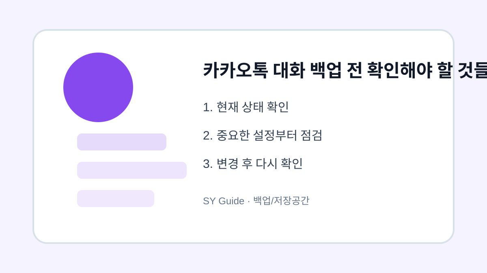

카카오톡 대화 백업 전 확인해야 할 것들
카카오톡 대화 백업 전 백업 범위와 사진, 동영상, 비밀번호, 복원 가능 시간을 확인합니다.

카카오톡 대화 백업은 기기 변경 전에 꼭 확인해야 하는 항목입니다. 하지만 백업한다고 해서 모든 사진과 동영상이 그대로 옮겨지는 것은 아닐 수 있습니다. 백업 범위와 복원 조건을 알고 진행해야 자료 손실을 줄일 수 있습니다.
대화와 미디어 구분
일반 대화 내용과 사진, 동영상, 파일은 백업 방식이 다를 수 있습니다. 중요한 사진이나 문서는 대화방에서 따로 저장하거나 다른 저장소에 복사해두는 것이 안전합니다. 단순히 대화 백업만 믿고 기존 기기를 초기화하면 첨부 파일을 놓칠 수 있습니다.
공식 안내 확인
백업 방식은 앱 버전에 따라 바뀔 수 있으므로 카카오 고객센터에서 최신 안내를 확인하는 것이 좋습니다. 특히 복원 가능 기간과 비밀번호 관련 안내는 꼭 확인하세요.
| 항목 | 확인 내용 | 주의점 |
|---|---|---|
| 대화 백업 | 최신 시간 | 복원 기간 확인 |
| 사진/영상 | 별도 저장 | 누락 가능 |
| 백업 비밀번호 | 기억 가능 여부 | 분실 시 복원 어려움 |
삭제하거나 옮기기 전 마지막 확인
- 백업 완료 시간을 확인하기
- 중요 사진과 파일은 따로 저장하기
- 백업 비밀번호를 잊지 않게 관리하기
- 새 기기에서 복원 완료 후 기존 기기 초기화하기
- 공식 고객센터 안내를 함께 확인하기
메신저 대화는 추억과 업무 자료가 섞여 있는 경우가 많습니다. 기기 변경 전에는 백업 완료 화면만 보지 말고 복원 조건까지 확인하세요.
카카오톡 대화 백업이 필요한 상황
휴대폰을 바꾸거나 앱을 다시 설치하기 전에는 대화 백업 상태를 먼저 확인해야 합니다. 사진과 동영상은 일반 대화 백업에 포함되지 않을 수 있어 필요한 파일은 별도로 저장해야 합니다.
카카오톡 백업 전 흔한 실수
백업 비밀번호를 잊거나 복원 가능 기간을 놓치면 대화를 되살리기 어렵습니다. 백업 완료 시간, 복원할 계정, 미디어 저장 여부를 함께 확인해야 새 기기에서 혼란이 적습니다.
카카오톡 대화 백업 관련 설정을 먼저 확인해야 하는 이유
카카오톡 대화 백업 관련 설정은 단순히 메뉴 하나를 켜고 끄는 문제가 아니라, 실제 사용 흐름에서 어떤 불편을 줄이려는지 먼저 정해야 합니다. 같은 메뉴라도 기기 제조사, 운영체제 버전, 앱 업데이트 상태에 따라 이름이 달라질 수 있으므로 현재 화면을 기준으로 차근차근 확인하는 것이 좋습니다.
카카오톡 대화 백업에서 자주 생기는 실수
카카오톡 대화 백업이 필요한 상황을 정리할 때는 되돌리기 어려운 삭제나 계정 변경을 마지막 단계로 미루는 것이 좋습니다. 먼저 표시, 알림, 권한처럼 쉽게 복구할 수 있는 항목부터 확인하면 실수 부담을 줄일 수 있습니다.
카카오톡 대화 백업 점검 후 다시 볼 부분
카카오톡 대화 백업이 필요한 상황은 사용자마다 필요한 범위가 다르기 때문에, 자주 쓰는 앱과 계정부터 적용하는 편이 좋습니다. 바꾸기 전 화면과 바꾼 뒤 결과를 비교하면 어떤 설정이 실제로 도움이 됐는지 판단하기 쉽습니다.